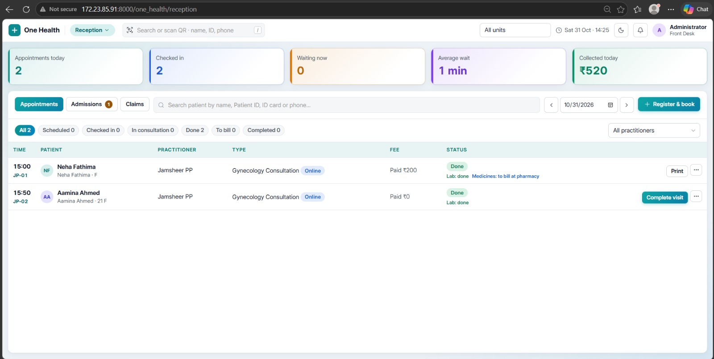
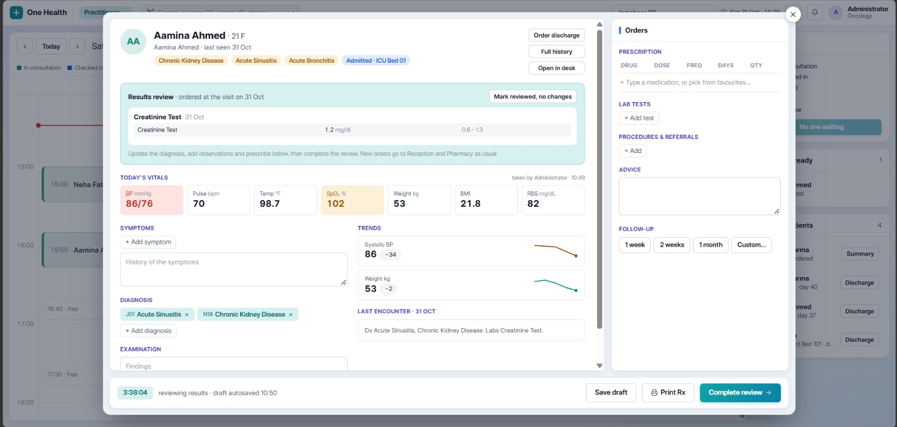
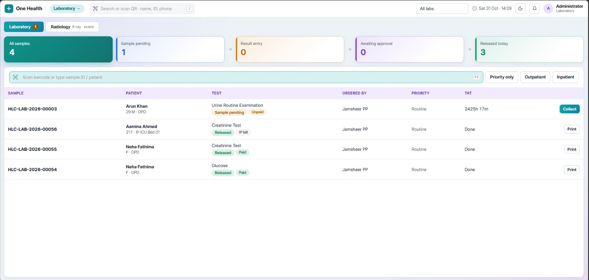
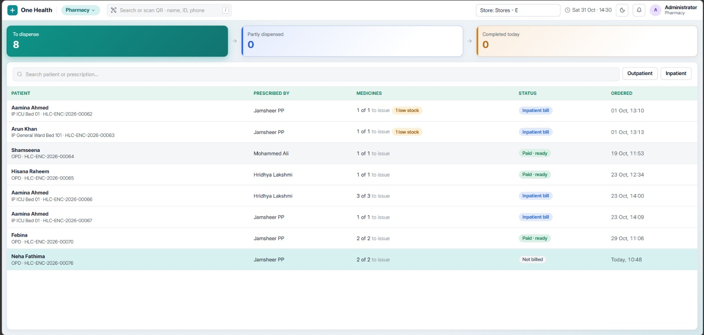
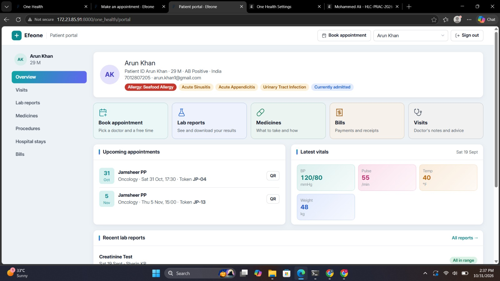

One patient record
Vitals, notes, orders and bills sit in one place for every team.
Hospital ERP for clinics and hospitals
OneHealth connects reception, doctors, laboratory, pharmacy and patients, so each team sees the same record and nothing gets re-entered.

Role-based portals
Each role gets a screen built for its own work. Select a portal to see it.
Register patients, book appointments and track the day from one screen.
Review the patient, vitals and results, then prescribe and order tests without leaving the consultation.

Follow every sample from collection to released result.

Turn prescriptions into dispensed medicines with clear billing status.

Patients see their own appointments, vitals and reports, and can book a visit online.

The patient journey
Information moves forward automatically, so no team waits on paperwork.
The patient books online or registers at reception and gets a token.
Patient, receptionNursing records vitals, and the doctor sees them right away.
NursingThe doctor records the visit and creates prescriptions or lab orders.
DoctorThe patient pays, gives a sample and the lab processes it.
Reception, labResults reach doctor and patient, and pharmacy dispenses the prescription.
Lab, pharmacy, patientWhy OneHealth
Vitals, notes, orders and bills sit in one place for every team.
Orders reach the lab and pharmacy the moment the doctor saves them.
Each desk sees what is waiting, what is paid and what is done.
Patients check appointments, results and bills on their phone.
Book a demo and we will walk through the portals your teams use.